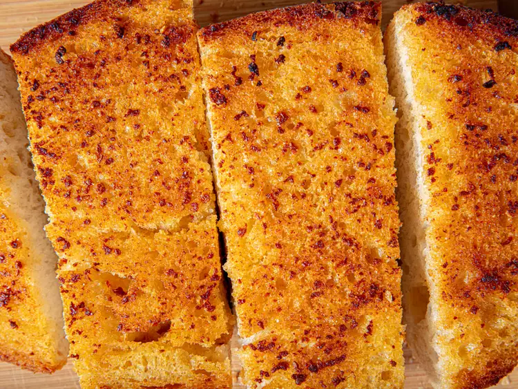

Garlic Bread

A combination of garlic powder and fresh garlic give this buttery, crusty bread a wonderfully intense garlic flavor in under 15 minutes.
Ingredients
- 1 1/2 teaspoon garlic powder
- 1 tablespoon water
- 6 tablespoons unsalted butter (85g), cut into 1/4-inch pieces and softened
- 6 medium garlic cloves (30g), minced to a paste
- 1/2 teaspoon Kosher salt
- 1/8 teaspoon paprika, optional
- 1/8 teaspoon ground cayenne pepper, optional
- 2 tablespoons (30ml) extra-virgin olive oil
- One roughly 1-pound loaf soft Italian or French bread about 12 inches
long, halved horizontally (see notes)
Steps
- Adjust oven rack to lower-middle position and heat oven to 425℉(220℃). In a medium bowl, combine garlic powder and water; set aside.
- Place half of the butter and all of the minced garlic, salt, paprika, and cayenne, if using, in a small bowl and microwave, covered, until butter is melted, and mixture is bubbling around to edges, 60 to 90 seconds, stopping and stirring every 30 seconds.
- Transfer melted butter mixture to the bowl with garlic powder mixture, add the remaining half of the butter, and stir with a small spoon until homogeneous loose paste forms. Whisk in the olive oil. (If the mixture melts completely, set aside and let it solidify slightly before using.)
- Spread cut sides of bread evenly with garlic-butter paste. Transfer bread, cut sides up, to a rimmed baking sheet. Bake until the butter mixture has melted and seeped into the bread, and edges are beginning to brown, about 5 minutes. Remove sheet from oven. Flip bread so the cut sides are down, and gently press into the baking sheet. Return to oven, and continue to bake until the cut bottom sides are light golden brown and crisp, 5 to 10 minutes longer. Use a thin spatula to gently flip, then transfer bread to a cutting board. Using a serrated knife, slice and serve.
Main